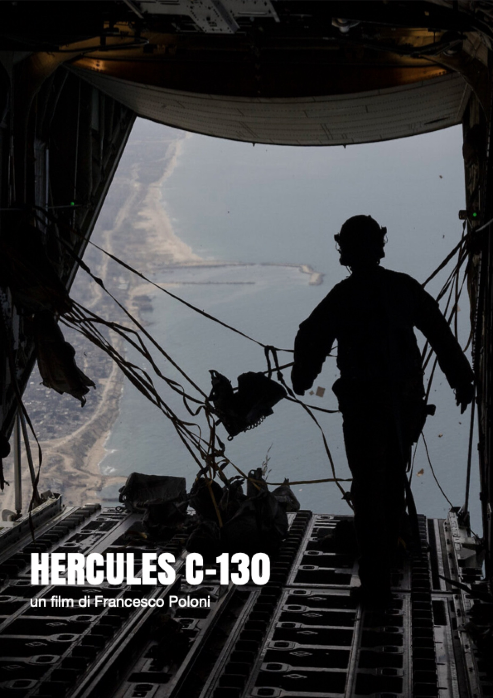

← Projects · Documentary
The world as it is — and the questions it forgets to ask itself.

D/01[ Documentary · Archive ]
A film constructed entirely from archive footage, which follows a mission to deliver humanitarian aid to the Gaza Strip. The project focuses on the perspective from which we observe it: the Western perspective — distant, protected, suspended between intervention and responsibility.
Through a minimalist visual approach, the film highlights the distance between the viewer and the events unfolding, transforming a concrete operation into a reflection on the role of images and the way in which we participate in conflicts without being directly involved.